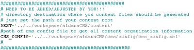

First of all: you need to have installed Python. Otherwise you won’t be able to use this very convenient script. The content generator is not part of CMS4_aldana it is just there for your convenience. You already must have thought that it must be very repetetive and boring to create the files you set in cms_config.xml (remember the larder guide) by hand. cms_config.xml itself does not generate anything it only knows which categories are there and where to find the content files.
Security issue
Watch out that you don’t put this tool in the same directory as your webapp is executed. This way anyone from outside could call this script by just entering the url ‘http://anywebsite/skeleton_generator.py’, if python scripts are activated through webserver. This way anyone access and corrupt your file system. So again: watch out that skeleton_generator.py lies outside of your website context!!
Parts
Following parts belong to the content generator:
- skeleton_generator.py: generates skeletons of your content.
- php_skel.txt: text inside gets included in every content file
skeleton_generator.py
This script is creating content files, including the php_skel.txt content and puts them properly named into the proper directory.
The content skeletons get created (as filename and path) like you configured in your cms_config.xml. Here a sample of configurations for the skeleton generator:

!!WATCH OUT!! that your cms_config.xml is well formed and configured properly, and for your sake set DEST correctly!! Otherwise you content files just get created an muddled up somewhere on your file system.
And don’t be afraid. Content files which exist already don’t get overridden, so you don’t need to write all your content new from scratch after having run skeleton_generator.py. So it is no problem that you run skeleton_generator.py even when you add new contents to your site from time to time (that’s what I always do). I never create my content files by hand!
php_skel.txt
You should not edit this file. It just contains text which gets included in every content file, skeleton_generator.py is creating. This text is mainly there to secure your site from be viewed directly (all contents should only be possible to be accessed through index.php5). Further more it includes php scripts so you can include links and images more easily when writing your content.
Running generator
For running the generator just call it with interpreter ‘python’ (on *nix systems) or ‘python.exe’ (on windows). Watch out that you run the script in the same directory as the scripts reside, because there are relative paths.